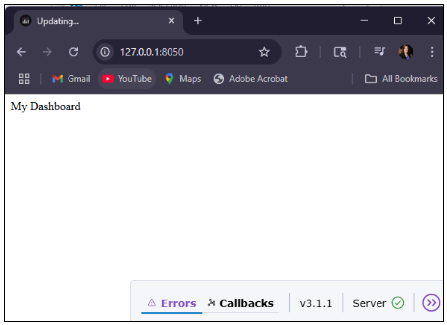
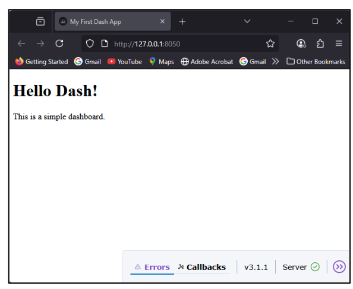
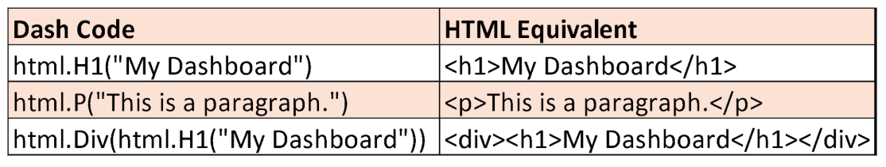
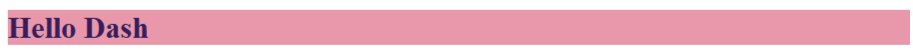
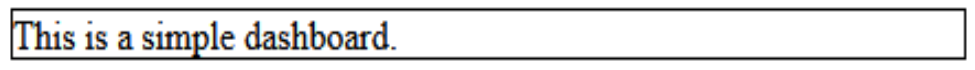
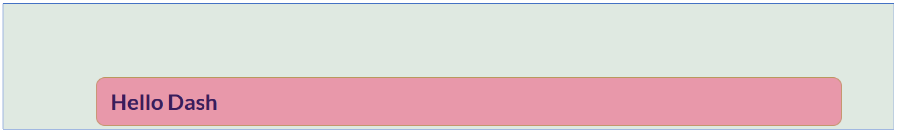
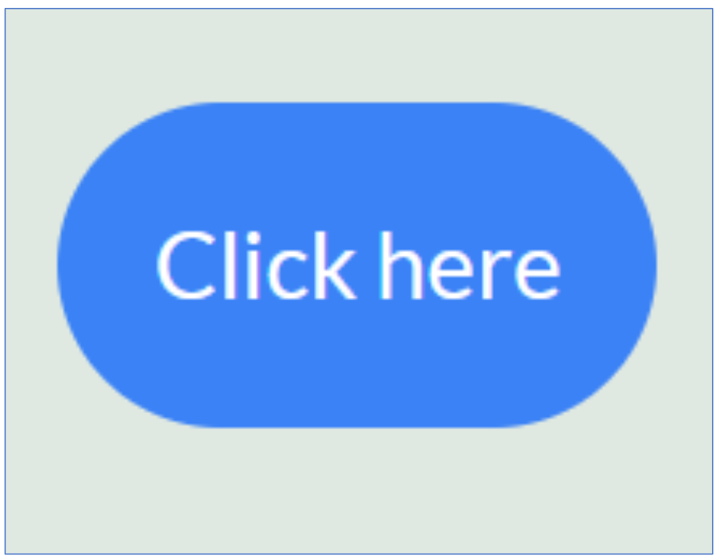

from dash import Dash, html Intro to Dash
Dash is a Python library for building interactive web applications. Developed by Plotly, the company behind the Plotly visualization library, Dash allows users to create dynamic, data-driven dashboards entirely in Python. It is built on top of Plotly for visualizations, Flask for managing the web server, and React for the front-end interface.
- Dash is designed for data analysts and data scientists with a basic knowledge of Python—no need for advanced web-development skills.
- It’s ideal for creating visualizations and dashboards that can be easily shared with customers, executives, and other stakeholders.
Dash layout is built on 2 things
Dcc: Dash Core Components
HTML : Dash HTML Components
Interactive features: callback functions
Exploring Visualizations
Dash vs. Matplotlib vs. Plotly
Use Matplotlib when you want quick, static visualizations (e.g., for academic papers or PDFs).
Use Plotly for interactive, browser-based graphs without building full dashboards.
Use Dash when you want to build full web apps or dashboards with charts, dropdowns, and user controls—ideal for business analytics tools or interactive data portals

Dash: Static and Dynamic Content
Dash can handle static content: Files that do not change on the server side — e.g., images, PDFs, CSS, JavaScript.
Dash can handle dynamic content: Data or components that change depending on user interaction, database queries, API calls, or real-time streaming.
How Dash handles it:
Callbacks: Functions decorated with @app.callback() listen for changes in user inputs and update outputs dynamically.
You can generate HTML dynamically in Python — Dash doesn’t pre-render your pages, it builds them at runtime.
Data sources:
APIs (fetch fresh data in callbacks)
Databases (query and return results dynamically)
Live data streams (e.g., WebSocket integrations, or polling APIs with dcc.Interval)
Creating your First Dashboard
Imports the Dash framework components
Dash is the main class used to initialize your web app
html lets you create HTML elements like
, etc., directly in Python
- Dash() initializes your web application
app=Dash()Remember that there are 2 main components for dash app Layout and Callbacks
To Define the layout of your app we add html.methods(““)
if __name__ == '__main__':
app.run(debug=True, use_reloader=False)name == ‘main’ ensures the server starts only when you run this file directly
app.run(…) starts the local server
- debug=True enables hot reloading, so you can see changes without restarting the server
My First Dashboard

When you run the code, it will start a local server and you can access the app in your web browser because debug is set to TRUE
Notice that it says that Dash is running on http://127.0.0.1:8050/ in the terminal after you run the code.
- You can also use http://localhost:8050/
You will see a debug menu on the browser.
Push control + C in the terminal to stop the server when you are done testing the app.
When putting the apps to production, set debug=False to hide the debug menu and improves security and performance
Adjust the layout to include a title and a paragraph
- There are Python functions from the dash.html module that mimic HTML elements. They are used to build the structure of your web page in a Dash app.
from dash import Dash, html
#Create the app
app = Dash(__name__)
app.title = "My First Dash App"
#Define the layout
app.layout = html.Div([
html.H1("Hello Dash!"),
html.P("This is a simple dashboard.")
#Run the app
if __name__ == "__main__":
app.run(debug=True)
])
App.title sets the browser tab title (like the text you see in the tab at the top of Chrome, Firefox, etc.). It’s the HTML <title> tag behind the scenes.
html.Div() is a container element (<div> tag) to hold other elements used to group components like text, headings, graphs, etc.
html.H1() creates a large heading (<h1> tag), used for titles or main headlines
HTML Components Overview
Dash Components has a hierarchical of tree of components
Popular Components are Dash HTML Components dash.html and
Dash Core components dash.dcc
Intro to HTML
HTML (HyperText Markup Language: The standard markup language for structuring Web pages.
HTML document -> web browsers -> multimedia web pages
HTML documents contain HTML elements such as:
Section Headings: h1, h2, h3, h4, h5, h6
Paragraph: p
Content division: div
Line Break: br
Anchor: a – to hyperlink to other pages.
Dash HTML Component

Adding a Line Break and a Hyperlink
html.Br() creates a line break in the layout, similar to the <br> tag in HTML.
- It doesn’t display any text—it just moves the next element to a new line.
html.A(“Click here”, href=“https://example.com”)
Creates a hyperlink.
“Click here” is the visible text.
href=“https://example.com” tells the browser where to go when clicked.
Works just like the HTML <a> tag.
app.layout=html.Div([
html.H1("Hello Dash!"),
html.P("This is a simple dashboard."),
html.Br(),
html.A("Click here", href="https://example.com")
])HTML Elements
In regular HTML, tags define the structure of a web page using this pattern: <tagname> content </tagname>
Examples:
Start tag content end tag
<p> This is a paragraph </p>
<h1> This is a Heading 1 </h1>
In Dash, you use the dash.html module to create the same HTML elements using Python syntax.
From dash import html

Style
In Dash apps, the style parameter is used to directly apply CSS styling to a Dash component using a Python dictionary. This allows you to control the appearance (e.g., colors, spacing, fonts, borders) of components without needing a separate CSS file.
HTML colors are located onhttps://htmlcolorcodes.com/

html.H1("Hello Dash", style={'color':'#381D5C',
'fontSize': '20px',
'backgroundColor':'#E898AA'})
Borders
Here are some key Dash HTML component style parameters for controlling borders, padding, and margin—all written in Python dictionary format for use in Dash:
‘border’: Shorthand for setting all border properties (width, style, color)
- {‘border’: ‘1px solid black’}
‘borderWidth’: Sets width of the border
- {‘borderWidth’: ‘2px’}
‘borderStyle’: Sets line style (e.g., solid, dashed)
- {‘borderStyle’: ‘dotted’}
‘borderColor’: Sets color of the border
- {‘borderColor’: ‘gray’}
‘borderRadius’: Rounds corners of the border
- {‘borderRadius’: ‘10px’}
Padding
Padding refers to the space inside the element
‘padding’: Sets padding on all sides
→ {‘padding’: ‘15px’}‘paddingTop’, ‘paddingBottom’, ‘paddingLeft’, ‘paddingRight’: Control sides individually
→ {‘paddingTop’: ‘20px’, ‘paddingBottom’: ‘5px’}
- In Python, key-value pairs in dictionaries must be separated by commas.
html.P("This is a simple dashboard.",
style={'border' : '1px solid black'})
Margin
Margin refers to the space outside the element
‘margin’: Sets margin on all sides: {‘margin’: ‘20px’}
‘marginTop’, ‘marginBottom’, ‘marginLeft’, ‘marginRight’: Control sides individually
{‘marginLeft’: ‘auto’, ‘marginRight’: ‘auto’} (useful for centering)
html.P("This is a simple dashboard.",
style={'border':'1px solid black',
'padding': '20px', 'margin': '50px'})
CSS in Dash: External Stylesheets
Tells Dash to load extra CSS files in addition to the default styles
You can make a styles.css for the entire app
Also accepts a list of URLs or dictionaries pointing to CSS resources
How it works
The browser loads the CSS when the app starts
Styles from these files apply to all app components
If you make an assets folder within your working directory, and drop a .css file in that, python will automatically use it with the dash app.
Give General Stylings for the Body

body,html{
padding: 40px; /* increased padding around context */
background: #dfe9e1 /*light gray background */
color: #1f1e1e; /*dark text color */
font: 16px Arial, sans-serif; /*increased base font size */
}Change the Paragraph Background Color
p{background-color: #d4cece;}
Give Stylings to the Hyperlink

/* Rounded, colored hyperlink box */
a{
display: inline-block;
padding: 25px; /*increased padding inside box */
border-radius: 9999px; /*pill shape */
background-color: #3b82f6; /*blue*/
color: #ffffff; /*white text*/
text-decoration: none; /*remove underline*/
font-size: 24px; /*larger text */
} Notice comments in css are made with /* and */
This makes the hyperlink rounded
Adding a Change in Style on Hover
/* Hover style change */
a:hover{
background-color: #474d59; /*darker gray on hover */
}:link → default style of an unvisited link.
:visited → style for a link the user has already clicked (and the browser remembers in history).
:hover → when the pointer (mouse, stylus, etc.) is over the element.
:active → the moment the element is being clicked (mouse pressed down but not released yet)